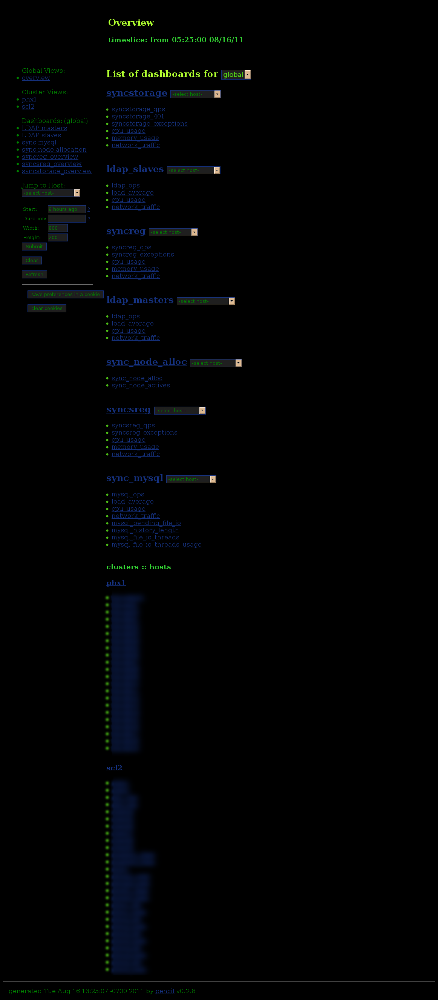
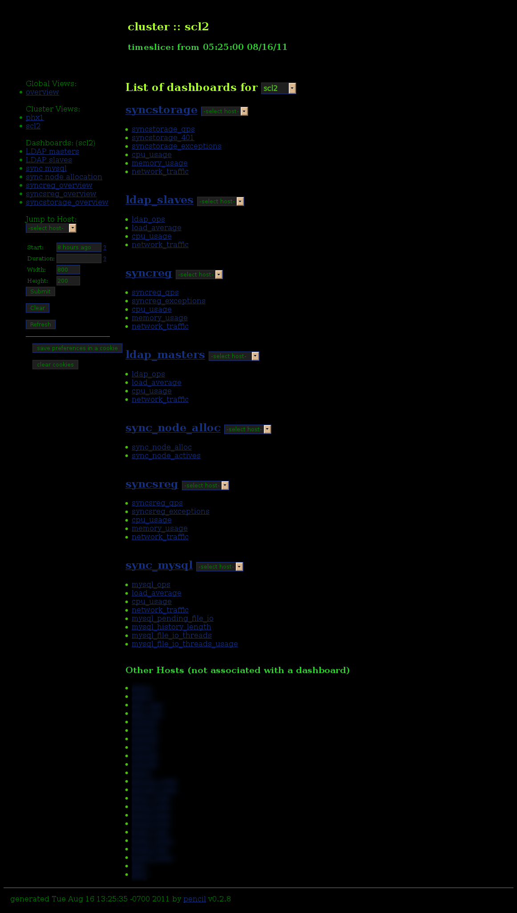
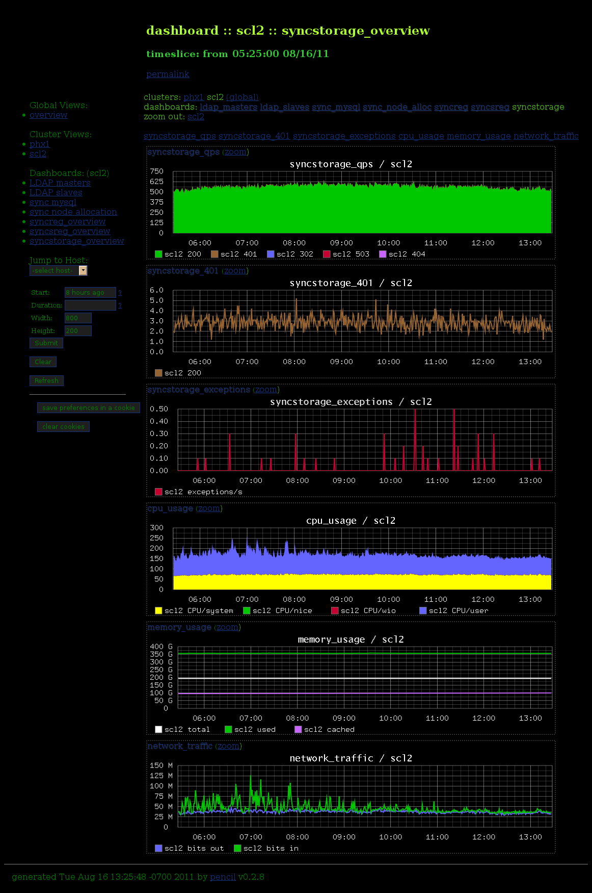

Global Overview
You are presented with a list of dashboards and the graphs that comprise them, as well as a list of clusters and their corresponding hosts. You can zoom into a cluster to see the cluster overview.
Cluster Overview
Similar to the global overview but only for a particular cluster. Hosts that are part of the cluster but not included in any particular dashboard are listed specially. Selecting a dashboard from here will take you to the dashboard view.
Dashboard view
Aggregate graphs for all the hosts as specified in configuration. Zoom in to a particular graph to see the graph-level view.
Graph-level view (zoom)

A breakdown of the aggregate graph with a summary and individual graphs for every host. Zoom in on a particular host to see the host-level view.
Dashboard

These are all graphs corresponding to a particular host. You can jump back up to a cluster view from here, or to dashboards of which the constituent graphs are a part of.